これはインフレスタータパック!? リオネル・メッシのMLS実装記念SP選手スカウトは引くべき？新SP選手5名を徹底評価
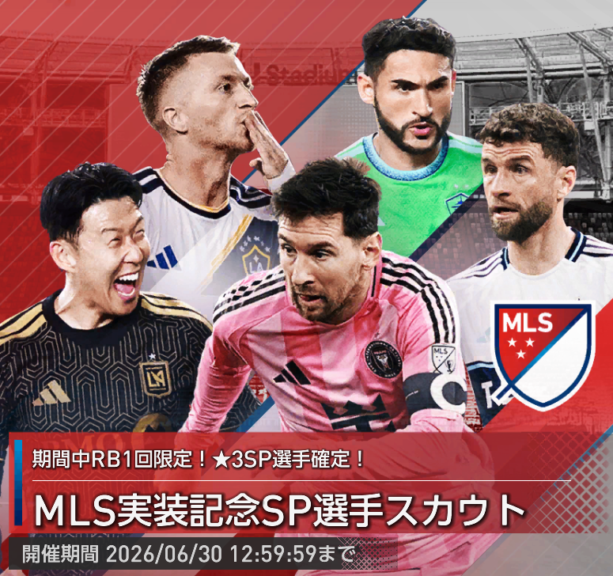
2026年6月9日更新のMLS実装記念SP選手スカウトでは、リオネル・メッシ、ソン・フンミン、トーマス・ミュラー、マルコ・ロイス、クリスティアン・ロルダンの新SP選手5名が登場しました。
今回は単なる有名選手追加ではなく、全SP選手360人中1位のメッシを筆頭に、ムービング編成と新金フォーメーションコンボ「ネラッズーロ'10」に直結する選手が含まれています。
しかも開催期間終了後に恒常ガチャへ追加されないため、性能面だけでなく、入手機会の少なさも含めて判断が必要なガチャです。
結論：メッシ狙いなら引く価値はかなり高い。ムービング勢は特に注目
今回の最大の当たりは、間違いなくリオネル・メッシです。初期総合力7154は全SP選手360人中1位で、RW、ムービング、ワイドストライカーのすべての比較軸でトップ。さらに新プレイスタイル「ワイドストライカーⅢ」を持つ唯一無二の選手です。
次点で、メッシと同じく新金フォーメーションコンボ「ネラッズーロ'10」のキー選手になれるソン・フンミンとクリスティアン・ロルダンも重要です。特にマンチェスター・シティガチャでハーランドやオマル、アケを獲得している監督にとっては、最強のネラッズーロ'10構成を組むことができ、メッシを引けた場合のソン・フンミンとロルダンの価値が一気にハネ上がります。
一方で、トーマス・ミュラーはポゼッションAMとして非常に強力ですが、現時点では発動条件に完全一致する金コンボがないため、ポゼッション編成の強化枠という立ち位置。マルコ・ロイスは総合力こそ高いものの、リアクションAMではグリーズマンの存在が大きく、深追いは慎重に判断したい選手です。
ガシャの注目ポイント
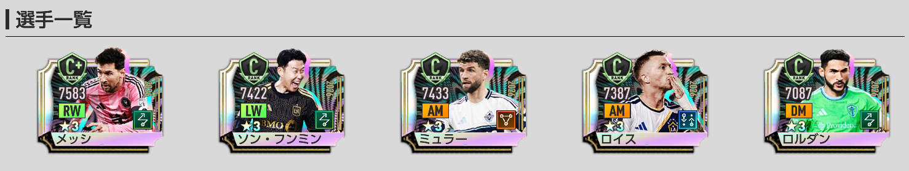
- ★3の排出率は5%。
- 排出される★3選手は、2026年5月15日までに登場した選手のみ。
- RB1回限定★3確定10連はピックアップ確定ではなく、全61種の★3SP選手の排出確率が同じ。
- 新SP選手がピックアップ確率で引けるのは「通常」タブの3000GBで引けるガチャ。
- 開催期間終了後、恒常ガチャ「SP選手スカウト」には追加されない。
- 「MLS実装記念SP選手スカウトメダル」は、期間終了後に1枚につき「エクストラコイン」5枚へ変換される。
RB1回限定★3確定10連の注意点
RB1回限定の★3確定10連は魅力的ですが、メッシやソン・フンミンが確定で出るガチャではありません。
★3確定枠では全61種の★3SP選手が同じ確率で並んでいるため、今回の新SP選手をピンポイントで狙うには向いていません。
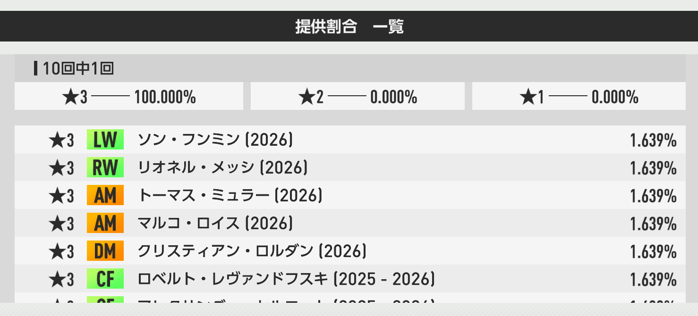
新SP選手を狙うなら、基本的には通常タブの3000GBガチャでピックアップ確率を確認してから引くのがおすすめです。
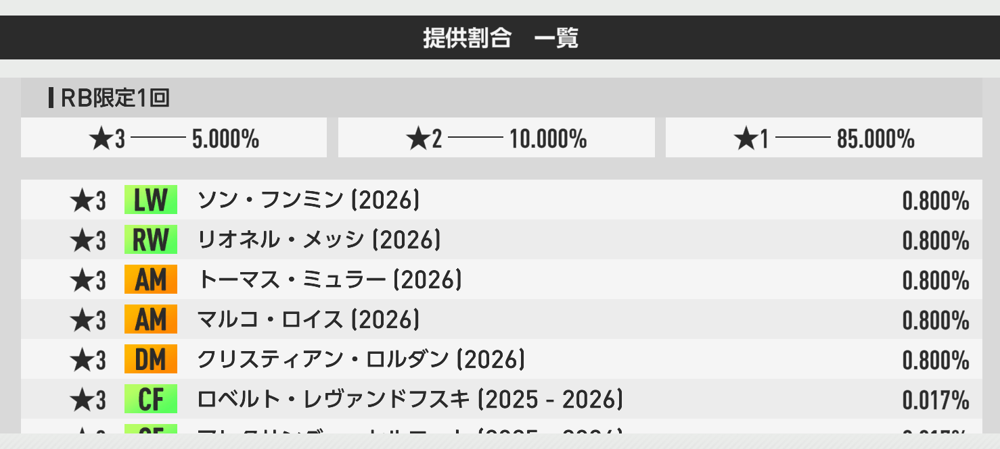
ちなみに、ピックアップ確率0.8％は「200連で1体も出ない確率が約20%」と、5人に1人は200連メッシ0体を経験する事になります。要注意です。
おすすめ度早見表
新SP選手5名の性能評価
リオネル・メッシ

基本性能
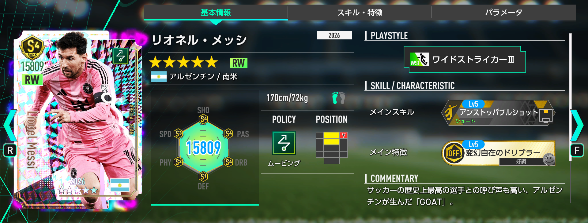
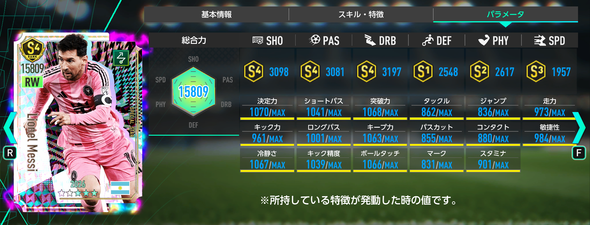
メッシは、今回のガチャどころか現時点のSP選手全体で見ても最上位の選手です。総合力は全SP選手360人中1位、ムービング85人中1位、RW22人中1位、ワイドストライカー10人中1位。ランキング面では文句なしの頂点です。
さらに新プレイスタイル「ワイドストライカーⅢ」を所有しており、SP選手では現状唯一無二。Ver2.0で追加された金フォーメーションコンボ「ネラッズーロ'10」の発動条件「RWワイドストライカーⅢ」を満たせるキー選手として採用できます。
スキル・特徴評価
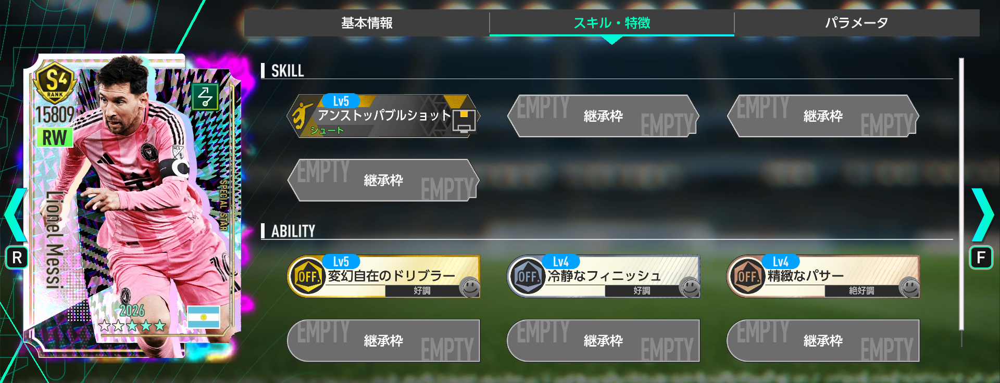
新スキル「アンストッパブルショット」を所有している点も非常に強力です。RW登録ではありますが、中央寄りに配置できるフォメコンや布陣で使えば、ダイレクトシュートなど得点に直結する動きにも期待できます。
所持特徴も「好調トリガー2つ、絶好調トリガー1つ」と扱いやすく、継承枠も3つ。高総合力、唯一性、フォメコン適性、育成自由度のすべてが高水準で、まさに今回の目玉です。
おすすめ度：
メッシは必須級と評価していい選手です。全SP選手で最も高い初期総合力を持ち、しかも恒常化されないため、取り逃がした場合の再入手機会が読みにくい点も大きな判断材料になります。ムービング編成を使うなら最優先、ムービングを使っていない人でも確保を検討したいレベルです。
ソン・フンミン
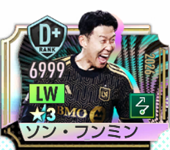
基本性能
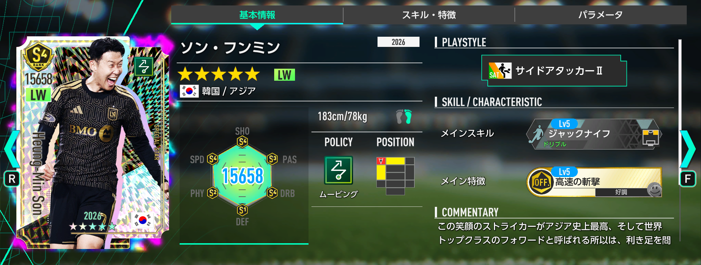
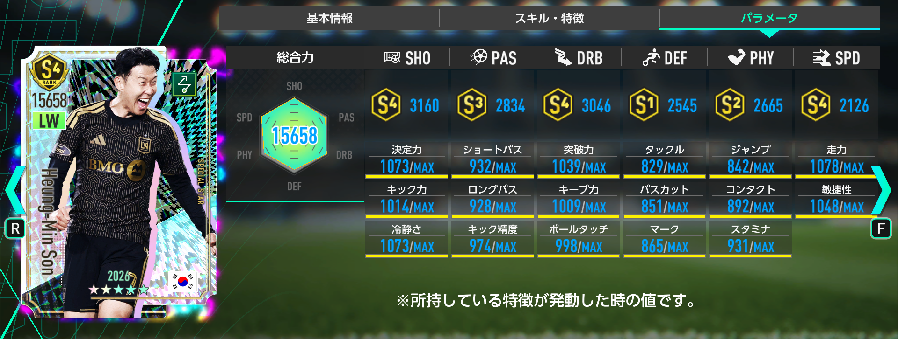
ソン・フンミンは、総合力が全SP選手360人中5位、ムービング85人中2位、LW24人中1位、サイドアタッカー24人中1位。LW枠としては現状トップクラスどころか、明確に最強候補です。
ムービングポリシーのLWサイドアタッカーは、ソン・フンミンと第2弾JリーグSP「カルリーニョス・ジュニオ」の2名のみ。さらに金フォーメーションコンボ「ネラッズーロ'10」の発動条件「LWサイドアタッカーⅡ」を満たせるため、メッシを引いた人ほど価値が上がります。
スキル・特徴評価
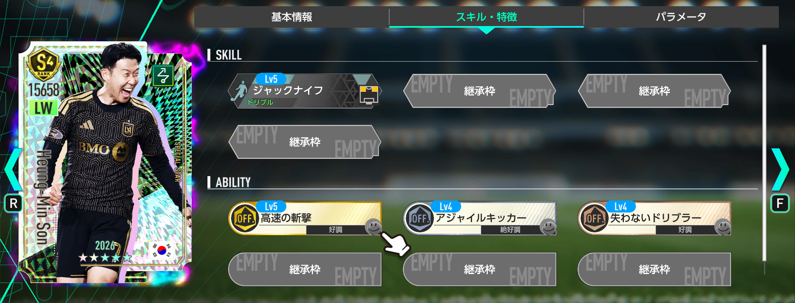
所持特徴はメッシと同じく「好調トリガー2つ、絶好調トリガー1つ」で扱いやすく、継承枠も3つ。サイドアタッカーとしての完成度が高く、ムービング編成の左サイドを一気に更新できる選手です。
カルリーニョス・ジュニオで代用できる？
「ネラッズーロ'10」の発動だけを目的にするなら、カルリーニョス・ジュニオでも代用可能です。ただし、総合力・特徴・育成自由度まで含めると、ソン・フンミンは明確な上位候補。メッシを中心に最強チームを組みたいなら、ソンもセットで狙いたい選手です。
おすすめ度：
LWポジション全体で見てもトップクラスの性能で、恒常化されない点を考えると確保優先度は高めです。特にメッシを獲得した場合は、ネラッズーロ'10の完成度を高めるためにソン・フンミンも欲しくなります。
トーマス・ミュラー
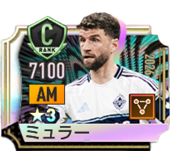
基本性能
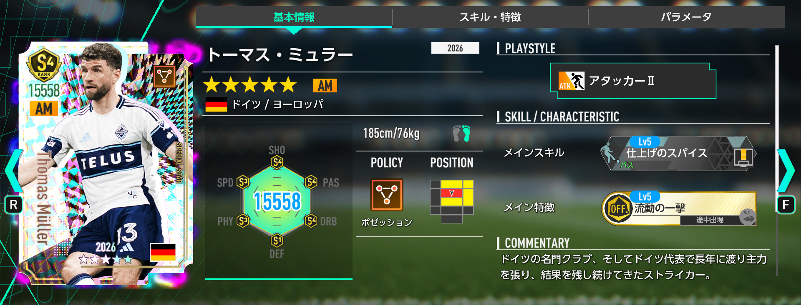
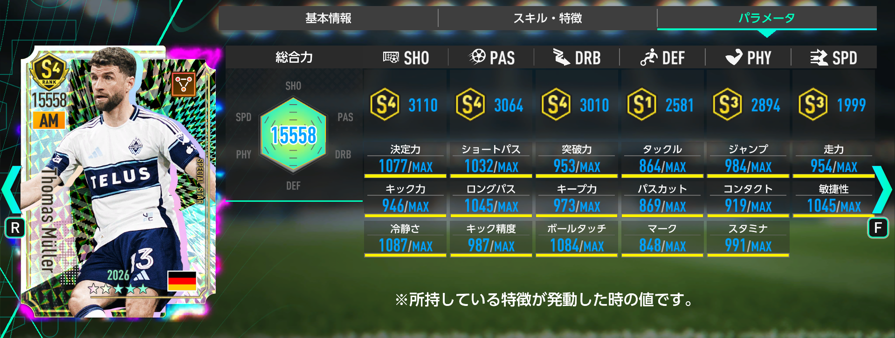
ミュラーは、総合力が全SP選手360人中2位、ポゼッション90人中1位、AM44人中1位、アタッカー31人中1位。メッシに次ぐ初期総合力を持つ、今回のもう一人のインフレ枠です。
ポゼッションAMアタッカーはこれで6人目ですが、これまで第一弾J/KリーグSP中心だった枠に、圧倒的な総合力を持つミュラーが追加された形です。現時点で発動条件を完全に満たせる金フォメコンはありませんが、「ロス・カフェテロス'94」や新コンボ「ブラウ・グラーナ'15」の強化枠として起用できます。
スキル・特徴評価
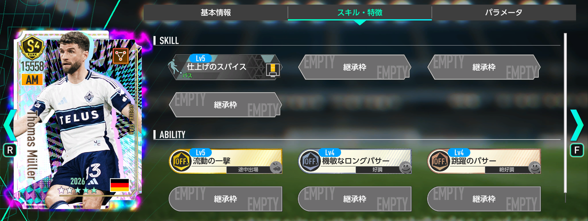
所持特徴は「好調トリガー1つ、絶好調トリガー1つ」に加えて、途中交代トリガーの金特徴を持つ構成。スタメンで使うだけでなく、試合後半に投入する最強クラスの交代枠としても面白い存在です。
おすすめ度：
ポゼッション推しの監督なら、AM更新候補としてかなり魅力的です。ただし、第一弾JリーグSPの香川真司や宇佐美貴史の限界突破が進んでいる場合は、手持ち次第で優先度が下がります。強いことは間違いありませんが、メッシほど「今すぐ必須」とまでは言い切れない評価です。
マルコ・ロイス
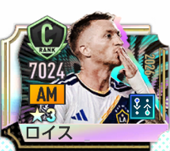
基本性能
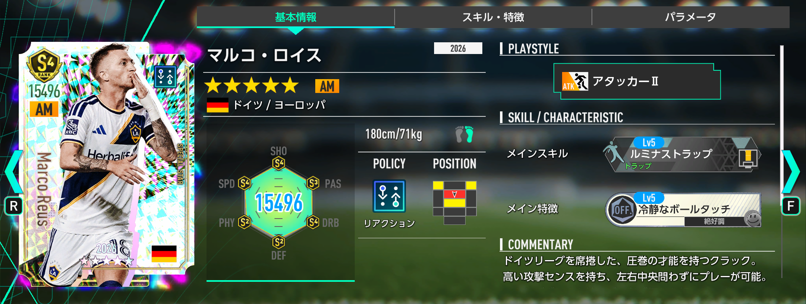
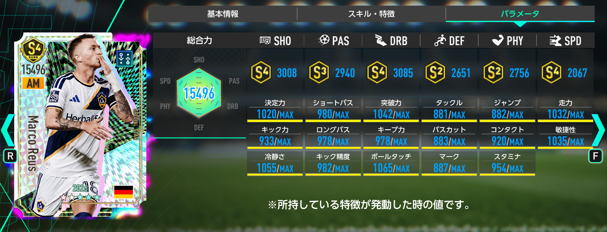
ロイスは、総合力が全SP選手360人中3位、リアクション89人中1位、AM44人中2位、アタッカー31人中2位。数字だけ見れば非常に強力なリアクションAMです。
ただし評価が難しいのは、同じリアクションAMにアントワーヌ・グリーズマンが存在することです。グリーズマンは総合力こそロイスよりわずかに低いものの、プレイスタイルがアタッカーⅢで、さらに今後の恒常化も予定されています。限界突破の狙いやすさまで考えると、グリーズマンの方が扱いやすい場面が多くなります。
スキル・特徴評価
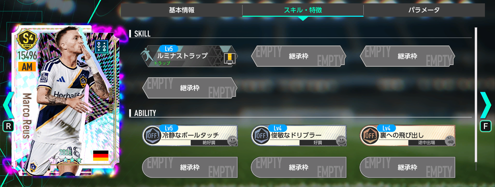
新コンボ「アルヴィネグロ・プライアーノ'11」の強化枠として使える点は魅力です。一方で、現状「エンカルナードス'23」を採用している場合、AM枠にアタッカーⅢが求められるため、ロイスを起用するとコンボが発動しない点には注意が必要です。
グリーズマンと比べるとどう？
ロイスは総合力では優秀ですが、リアクションAMの実用面ではグリーズマンの壁がかなり高いです。特に「エンカルナードス'23」ではグリーズマンが発動条件に直結するため、ロイスは最強というより、AM3枚起用の「アルヴィネグロ・プライアーノ'11」でグリーズマンと並べる補強枠と考えるのが自然です。
おすすめ度：
弱い選手ではなく、むしろ総合力だけならトップクラスです。ただし、グリーズマン、ジョアン・ペドロなど競合が強く、性能目的でロイスだけを深追いするのは慎重に判断したいところ。リアクションAMを複数枚使う編成を本気で組む人向けです。
クリスティアン・ロルダン
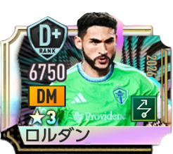
基本性能
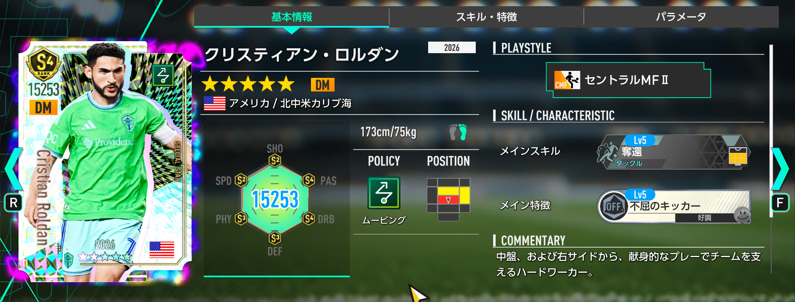
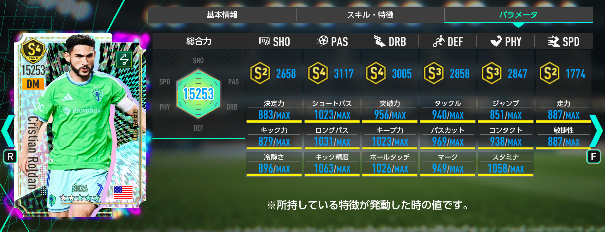
ロルダンは、総合力が全SP選手360人中29位、ムービング85人中10位、DM48人中8位、セントラルMF25人中5位。メッシやミュラーのような超上位ではありませんが、ムービングDMセントラルMFとして見ると現状最強です。
さらに、メッシやソン・フンミンと同様に、金フォーメーションコンボ「ネラッズーロ'10」の発動条件キー選手として起用可能。ここがロルダン最大の価値です。
スキル・特徴評価
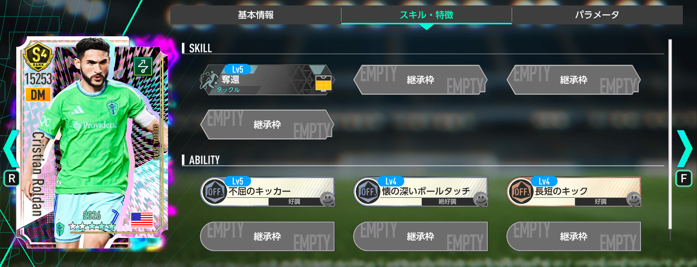
ムービングDM全体で見ると、スコット・マクトミネイやケヴィン・デ・ブライネが強力な競合になります。特に「カナリア軍団'06」ではDM2枚の布陣なので、マクトミネイとケヴィンの2枚起用が最強候補。「アルビセレステ'01」や「ソベラーノ'94」ではDM1枚のため、マクトミネイが優先されやすいです。
ただし、ロルダンは「好調トリガー2つ、絶好調トリガー1つ」と扱いやすく、途中交代トリガーの特徴を継承すれば現状のムービング最強構成にも組み込みやすくなります。
マクトミネイ・ケヴィンとの差
汎用的なムービングDMとしては、マクトミネイやケヴィンの方が優先される編成もあります。ただし「ネラッズーロ'10」を使うなら、ロルダンは発動条件に関わる重要なピースです。恒常★3SPショーン・ロングスタッフの上位存在として見れば、ムービング推しには十分価値があります。
おすすめ度：
単体性能だけなら超大当たり枠ではありませんが、ネラッズーロ'10を組むなら評価は一段上がります。メッシとソンを引けた人にとっては、最後のパーツとしてロルダンも欲しくなる選手です。ムービング推しなら狙う価値あり、ムービングを使わないなら無理に深追いしなくてもいい評価です。
今回のガチャは誰が引くべき？
引くべき人
- リオネル・メッシを確保したい人。
- ムービング編成をメインで使っている人。
- 新金フォーメーションコンボ「ネラッズーロ'10」を本気で組みたい人。
- ソン・フンミン、ロルダンも含めてムービングのキー選手を揃えたい人。
- マンチェスター・シティガチャをコンプしたムービング推しの人。
様子見でもいい人
- ムービング編成をほとんど使っていない人。
- メッシ以外を引いた時に満足しにくい人。
- リアクションAMはグリーズマンで十分と考えている人。
- ポゼッションAMの手持ちがすでに充実している人。
- GBやRBに余裕がなく、次回ガチャに備えたい人。
おすすめ度ランキング
- リオネル・メッシ：全SP選手360人中1位。ワイドストライカーⅢ唯一で、ネラッズーロ'10の最重要パーツ。
- ソン・フンミン：LW最強候補。メッシとセットでムービング編成の価値が大きく上がる。
- トーマス・ミュラー：ポゼッションAM最強格。手持ち次第では即戦力。
- クリスティアン・ロルダン：単体では中堅寄りだが、ネラッズーロ'10の発動要員として重要。
- マルコ・ロイス：総合力は高いが、グリーズマンとの競合が厳しい。
まとめ
MLS実装記念SP選手スカウトは、メッシを狙う価値が非常に高いガチャです。全SP選手360人中1位の初期総合力、新プレイスタイル「ワイドストライカーⅢ」、金フォーメーションコンボ「ネラッズーロ'10」のキー選手、そして恒常化なし。これだけ条件が揃っているため、ムービング編成を使う人にとってはかなり重要なガチャと言えます。
ただし、メッシ1点狙うは非常に危険です。ピックアップ確率0.8％は「200連で1体も出ない確率が約20%」と、5人に1人は200連メッシ0体を経験します。これは忘れないでください。
総合的には、ムービングを強化したい人、ネラッズーロ'10を使いたい人、メッシを逃したくない人は引く価値あり。一方で、ムービングを使わない人や、グリーズマン・既存AMなどで手持ちが十分な人は、深追いせずに様子見でも問題ありません。
選手評価ツールも活用しよう
各選手のポジション別順位、ポリシー別順位、プレイスタイル別順位、対応フォーメーションコンボを詳しく確認したい場合は、サイト内の「選手評価ツール」もおすすめです。記事内の評価とあわせて、自分の手持ちや使いたいフォメコンに合うかチェックしてみてください。